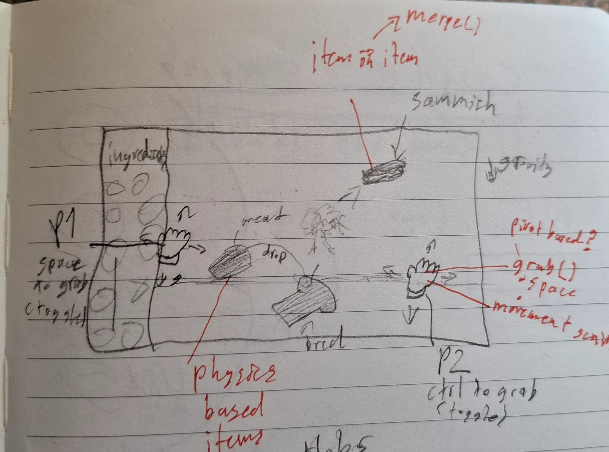
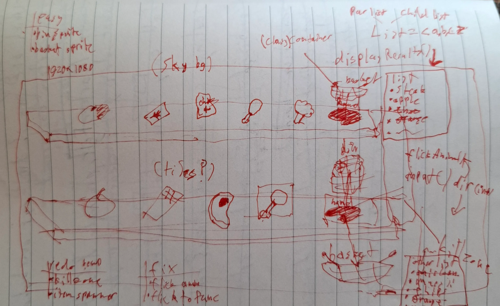

Introduction
The Project, Client and Team
This was a rewarding group project, completed under a client-driven timeframe. It eventually became a 2D, 2-player Unity game with a focus on nutritional education. The client for this game, was an individual from Nutri-Islands ltd, interested in making a game focused towards younger audiences, they gave us 6 weeks to complete the game. We met with them on a weekly-basis, ensuring the project was headed toward their specific needs. The team I was working with was comprised of 5 members, one member of which was responsible for general management and scrum. Another two were responsible for art assets and visual design. Then another member and I were assigned software engineering responsibilities. Notably; I also took on the role of Game Designer.

Process
Weeks One through Six
The beginning weeks (1-2), were dedicated to ideation and design, so I started by researching the clients work aswell as the resources given. After some meetings and aforementioned research, I begun to form a vision of what the client wanted. Which at the time; was a remaster of their original game format, with new mechanics and game flow. After communicating with the team they seemed to be onboard with the direction. During weeks 3-4, I discovered that my design and vision was not on par with the clients. So I made a pivot into another design based off their feedback, which was further into the now mini-game system. In the next meeting, the client and team were onboard, and understood the vision alot better, (Something I realised was a weakness from the previous week). After this, we entered the development stage, so the other developer and I started getting some working prototypes running. By the end of week 4, we had a great prototype built for two out of four of the mini-games. During the final weeks (5-6), the client was largely happy with what we had been building, (aside from some minor notes of course). So we kept building the final two mini-games. We eventually ended out with some pretty cool work. It ended up as a cohesive 2 player experience.

Reflections
This project was a great exercise in working under a scrum/agile based framework as a team. I also found that having tasks laid out clearly in sprints helped alot with my overall productivity and time-management. Additionally, I discovered a facet of game development that I really enjoyed, that being game design.